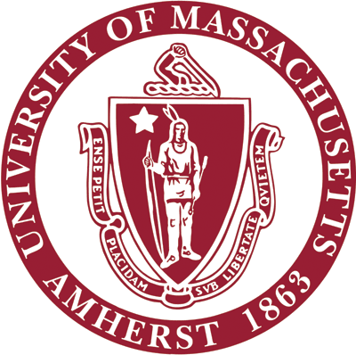
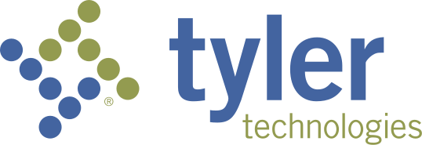
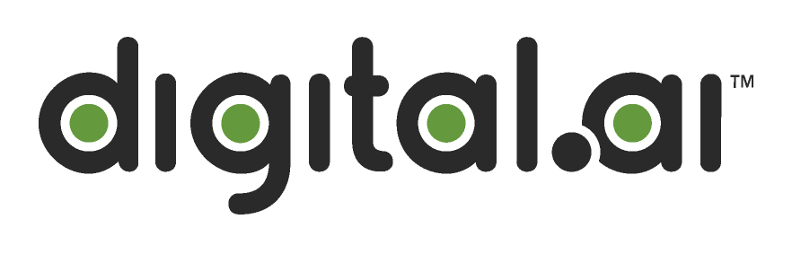

History

LightedRoad.AI Inc.
A.I. Research Scientist - Associate
Currently working as an A.I. researcher in California developing Multi-Agent Reinforcement Learning models for healthcare assistance.
Our team recently launched a new research patent for medicare insurance optimization!
Other projects I work on include developing models optimizing for surgical robotic assistance, differential diagnosis support for medical professionals, prescription dosage/coverage, etc.
Dynamic and Autonomous Robotic Systems (DARos) Lab
Graduate Research Assistant
Was a part of the Daros Lab working under the supervision of Prof. Donghyun Kim.
The lab is currently developing a robotic guide dog designed for providing navigational assistance for the visually impaired.
I was part of the team responsible for the perception and reasoning component of the dog which involved creating A.I. models able to understand vehicles, pedestrians, traffic lights, crosswalks, walk signs, tactile pavings, etc.
and integrating these with other A.I. models such as a path-planning and language system in order to make a full conversational guide for a user!
We were able to succesfully demonstrate full human trials at the FIDELCO guide dog school and throughout the Boston Metropolitan area (including the subway)!
The lab has its own youtube page where we demo our robots testing various features out, you can check it out here!
Research I worked on was recently published to the CVPR 2025 AVA workshop and to the ICRA 2026 Robotics Conference where our paper won a Best Paper Finalist Award!
My work also involved incorporating neuromorphic devices such as event cameras into the vision pipeline for low-latency and low-power consumption with the aim being to to build a complete foundational model for high-speed assistive robotics!

University of Massachusetts Amherst
M.Sc: Artificial Intelligence and Robotics
Graduated with my Research Masters Degree specializing in Neuro A.I. and Robotics
Teaching: I was a Teaching Assistant and Course Grader for CS 485 - Applications of Natural Language Processing for 40+ senior undergrads.
Research and coursework I am involved in focus on application based artificial intelligence and their subsections with robotics and neuroscience.
Some of the courses and research areas I have taken/ am studying/ am interested in include:
Neuromorph Engineering
Bio-inspired Neuromechanics
Cognitive Neuroscience
Cognitive Psychology
A.I. and Robotics
Advanced NLP
Advanced Computer Vision
Reinforcement Learning
Apart from this, Some of the clubs I'm currently involved with are:
Neuroscience Club
Robotics Club
Chess Club
Boxing Club

DeepLearning.AI
Certification of Specialization : Deep Learning
Completed the Deep Learning Specialization while on a sabbatical before beginning Grad School.
Went back home after 7 years and visited old friends and family.

Tyler Technologies Inc. - NIC Division
A.I. Engineer II- Research & Development
Transitioned to a more senior role where I lead research for emerging A.I. technology and lead integrations for legacy products into current infrastructures.
Facilitating the alignment of new research efforts with existing clients' objectives was a new challenge but a fun one.
I supervised & mentored new developers and also actively participated in research conferences, workshops, and seminars on behalf of the company.

US eDirect Inc.
A.I. Engineer - Research and Development
I worked as an A.I. and software engineer in the research and development team of a private NYC tech firm.
My role was a jack-of-all-trades ranging from Computer Vision and ML development, Back-end and Front-end development, Database modelling, Cloud architecture and Security.
My work there, especially during the COVID crisis, eventually got the firm acquired by a S&P 500 company!
Here's an example and an article of the resulting acquisition.

Simulation and Game Design Lab
Undergraduate Honors Researcher
I joined TreaAndrea M. Russworm's Radical Play research lab (now at USC).
I conducted a 6-month IRB proposal with live human trials under her supervsion to complete my Honors Thesis on the impact artificial intelligence in sports video games can have on athletes and sports performance.

Digital.AI
A.I. Engineering Intern
I did an internship in the Silicon Valley at an AI startup (now gone public).
It was my first exposure to the industrial side of tech and A.I., especially the fast-paced nature of it.
I got introduced to prediction estimates using ML and gave a demo of it which helped the company save 3 months of bug work!
University of Massachusetts Amherst
B.Sc. Honors : Computer Science
B.Sc. with Honors at the University of Massachusetts Amherst with a major in Computer Science and a minor in Math.
Some of the clubs I was involved with include:
Men's Club Soccer
Brazilian Jiu-jitsu Club
Students for Alternative Music and Technology
Theatre & Improv club
I was also a Resident Assistant where I supervised dormitories of upto 150 Freshmen from 2017-2019!